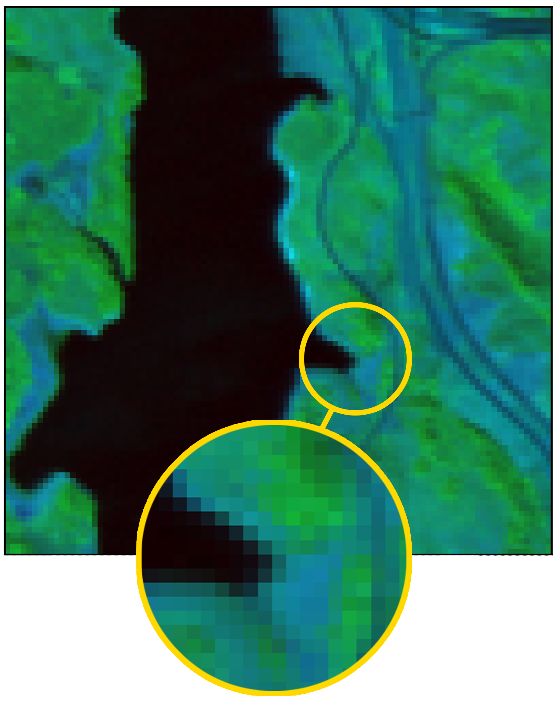

Hyperspectral images, which record the electromagnetic spectrum for a pixel in the image of a scene, often store hundreds of channels per pixel and contain an order of magnitude more information than a similarly-sized RBG color image. Consequently, concomitant with the decreasing cost of capturing these images, there is a need to develop efficient techniques for storing, transmitting, and analyzing hyperspectral images. This paper develops a method for hyperspectral image compression using implicit neural representations where a multi-layer perceptron network fΘ with sinusoidal activation functions “learns” to map pixel locations to pixel intensities for a given hyperspectral image I. \(f_\Theta\) thus acts as a compressed encoding of this image, and the original image is reconstructed by evaluating \(f_\Theta\) at each pixel location. We have evaluated our method on four benchmarks—Indian Pines, Jasper Ridge, Pavia University, and Cuprite—and we show that the proposed method achieves better compression than JPEG, JPEG2000, and PCA-DCT at low bitrates.
This work investigates the use of INRs for hyperspectral image compression and shows that it is possible to achieve high rates of compression while maintaining acceptable Peak Signal-to-Noise Ratio (PSNR) values. Figure 1 provides an overview of the proposed compression and decompression pipeline.
Figure 1. Compression and Decompression Pipeline. (left) An MLP with a periodic activation function is trained to map pixel locations to the pixel’s spectral signature. (right) Once fitted, MLP is used to reconstruct the hyperspectral image by performing inference at various pixel locations
The proposed compression method consists of two steps. Step 1 performs an architecture search. The goal here is to find an MLP that achieves the highest reconstruction accuracy for a given bpppb budget. Architecture search is performed by overfitting multiple MLPs having different numbers of hidden layers and hidden layers’ widths to the hyperspectral image. Architecture search, however, means longer compression times. Step 2 involves quantizing and storing the parameters of the overfitted MLP on disk.
We have used four datasets to evaluate our approach: Indian Pines, Jasper Ridge, Pavia University, and Cuprite. We compare our work with three hyperspectral image compression methods: 1) JPEG, 2) PCA-DCT, and 3) JPEG2000. Figure 2 shows PSNR values at various compression rates for different methods. Our method stores MLP weights as 32-bit floating point values, whereas hp ours stores MLP weights at half-precision as 16-bit floating point values that are constructed by quantizing the MLP weights. These plots illustrate that our methods achieve higher compression quality, i.e., better PSNR, for a given value of bpppb. This is especially true for lower bpppb values.
Figure 2. Compression results. (clockwise, from top left) Pavia University, Cuprite, Indian Pines, and Jasper Ridge. PSNR values achieved at various bpppb for our method, along with those obtained by JPEG, JPEG2000, and PCA-DCT schemes. Here “ours” refer to our method where parameters are stored at 32-bit precision, and “HP ours” refer to results when parameters are stored at 16-bit precision.
Figure 3 shows some original and reconstructed images in the datasets used in this project.

Figure 3. Reconstructed images are shown in pseudo-color. (Up to bottom) Cuprite, Indian Pines, Jasper Ridge, and Pavia University. The image on the left in each pair is the original hyperspectral image, whereas the image on the right is the reconstructed, i.e., decompressed, hyperspectral image. The zoomed-in portions show that the structure is preserved in the reconstructed image. Images are shown in pseudo-color.
For technical details please look at the following arXiv manuscript